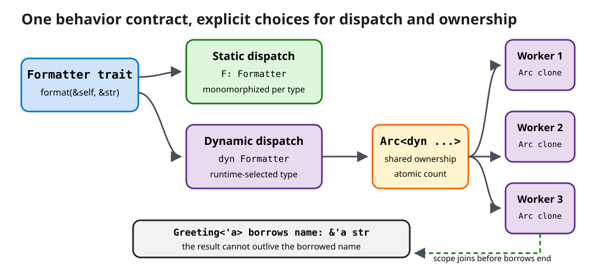

Traits, Lifetimes, and Shared Ownership
Make rust-greeter extensible without inheritance, state a reference relationship the compiler can verify, and share one runtime-selected formatter safely across worker threads.
Arc<T> is shared ownership rather than automatic thread safety.
Starting state: the completed Lesson 5 rust-greeter package (src/main.rs with Args — carrying name, count, style: GreetingStyle, and file: Option<PathBuf> — plus greeting, GreetingStyle, NameError, validate_name, load_names, the style-aware render_all(&names, style), the batch-aware main, and 15 passing tests; Cargo.toml unchanged since Lesson 1). Working directory: cd path/to/rust-greeter — replace path/to with the parent folder you used before; every command in this lesson runs from that package root. Default file: unqualified code snippets target src/main.rs; each one below states whether it replaces existing code, is inserted at a named location, or is an illustrative excerpt that is not added to the file.
30-minute core path
| Time | Activity |
|---|---|
| 4 min | Define and implement a formatter trait |
| 6 min | Compare generic static dispatch with dyn Trait dynamic dispatch |
| 5 min | Read an explicit lifetime on a struct that stores a borrow |
| 5 min | Choose among Box, Rc, Arc, RefCell, and Mutex |
| 7 min | Exercise: share a runtime-selected formatter across scoped workers |
| 3 min | Knowledge check and decision-rule recap |
Part 1: traits define behavior without inheriting data
Lesson 4 introduced GreetingStyle (Formal/Casual) behind a --style flag, and Lesson 5 threaded it through shout_line inside the scoped batch renderer. That bool-and-match branch works, but it does not scale to a third style and cannot be extended by code outside this file. A trait names behavior that a type can implement, so we can route the same --style flag through pluggable types instead of a boolean flag deep inside render_all.
File: src/main.rs — add above the existing greeting function. Part 5 later replaces the trait Formatter line below with a version that adds supertraits; leave greeting itself untouched for now.
trait Formatter {
fn format(&self, name: &str) -> String;
}
struct Plain;
struct Loud;
impl Formatter for Plain {
fn format(&self, name: &str) -> String {
greeting(name)
}
}
impl Formatter for Loud {
fn format(&self, name: &str) -> String {
greeting(name).to_uppercase()
}
}| Rust syntax | Meaning | C++ bridge |
|---|---|---|
trait Formatter | Declares required behavior, not storage or an inheritance tree. | Closest to a pure abstract interface or a concept, depending on how it is consumed. |
&self | A shared borrow of the value receiving the method. | Comparable to a const member-function receiver. |
struct Plain; | A unit-like, zero-size type with no fields. Its type identity selects behavior. | Like an empty policy class, usually optimized to occupy no runtime space. |
impl Formatter for Plain | Implements the trait for this concrete type. Data and behavior definitions remain separate. | Unlike inheriting from a base class, Plain stores no base subobject or vtable by default. |
greeting(name) / greeting(name).to_uppercase() | Both formatters reuse the Lesson 1 greeting function instead of duplicating its format string. Loud just uppercases the result — the same text shout_line(&text, true) produced in Lesson 5 — so switching to traits changes dispatch, not output. |
A crate may implement a trait for a type when it owns the trait or the type. This “orphan rule” prevents two dependency crates from silently supplying competing implementations of the same trait/type pair.
Part 2: one trait, two dispatch choices
Static dispatch with a trait bound
Illustrative excerpt — not added to rust-greeter. preview and the call to it are a standalone demonstration; the exercise in Part 5 uses Arc<dyn Formatter> instead of this generic form.
fn preview<F: Formatter>(formatter: &F, name: &str) -> String {
formatter.format(name)
}
let text = preview(&Plain, "Ferris");F is a generic type parameter. F: Formatter is a trait bound: every accepted concrete type must implement Formatter. The compiler generates specialized machine code for each concrete F used, a process called monomorphization.
Dynamic dispatch with a trait object
Illustrative excerpt — not added to rust-greeter. choose_formatter demonstrates Box<dyn Formatter> in isolation; Part 5 builds the equivalent runtime selection directly in main using Arc<dyn Formatter> instead.
fn choose_formatter(loud: bool) -> Box<dyn Formatter> {
if loud {
Box::new(Loud)
} else {
Box::new(Plain)
}
}
let formatter = choose_formatter(true);
let text = formatter.format("Ferris");dyn Formatter means a concrete formatter type selected at runtime. A trait-object pointer carries a data pointer plus dispatch metadata, commonly described as a vtable. Box gives the differently sized concrete values one fixed-size owning handle and one return type.
| Question | Generic F: Formatter | dyn Formatter |
|---|---|---|
| When is the concrete type chosen? | Compile time | Runtime |
| Dispatch | Direct after monomorphization; often inlineable | Indirect through trait-object metadata |
| C++ analogy | Template constrained by a concept | Virtual interface through an owning pointer or reference |
| Best fit | Hot paths and APIs where callers know the type | Runtime selection and heterogeneous collections |
| Tradeoff | More generated code for many concrete types | Indirection and only object-safe trait methods |

Download the editable Excalidraw source.
Part 3: lifetime annotations state a borrowing relationship
Most lifetimes are inferred. You write one when the compiler needs help relating multiple borrows, especially when a struct stores a reference.
File: src/main.rs — add above fn main. This struct and function are used later in Part 5's exercise.
struct Greeting<'a> {
name: &'a str,
text: String,
}
fn build_greeting<'a>(
formatter: &dyn Formatter,
name: &'a str,
) -> Greeting<'a> {
Greeting {
name,
text: formatter.format(name),
}
}| Lifetime syntax | How to read it |
|---|---|
'a | A lifetime parameter label, pronounced “lifetime a.” It is not an elapsed duration and does not keep anything alive. |
Greeting<'a> | This value contains at least one reference whose validity is described by 'a. |
name: &'a str | The stored view cannot outlive the source string associated with 'a. |
-> Greeting<'a> | The returned struct remains tied to the input name borrow. The annotation describes that relationship; it does not extend the borrow. |
formatter: &dyn Formatter | The formatter borrow is used only during the call and is not stored, so the result does not need to carry its lifetime. |
Illustrative excerpt — not added to rust-greeter. Both sides below are a standalone comparison of a compile-time rejection versus a working pattern; do not paste either into src/main.rs.
let greeting = {
let local = String::from("Ada");
build_greeting(&Plain, &local)
};
println!("{}", greeting.name);let owner = String::from("Ada");
let greeting =
build_greeting(&Plain, &owner);
println!("{}", greeting.name);The first form fails at compile time because Greeting would retain a view of local after local is dropped. This is the reference-member lifetime hazard C++ leaves largely to design discipline.
Part 4: choose the ownership wrapper that states the truth
| Type | Ownership and mutation model | C++ bridge | Threads? |
|---|---|---|---|
Box<T> | One owner of heap-allocated T | std::unique_ptr<T> | If T is safe to send |
Rc<T> | Reference-counted shared ownership; non-atomic count | Single-threaded shared_ptr-like handle | No |
Arc<T> | Atomically reference-counted shared ownership | std::shared_ptr<T> with atomic ownership count | Only if T is thread-safe |
RefCell<T> | Single-threaded interior mutation with borrow rules checked at runtime | No direct equivalent; think checked dynamic aliasing | No |
Mutex<T> | Exclusive mutable access through a lock guard | std::mutex protecting a value, with RAII guard | Yes, when T: Send |
Send and Sync are marker traits the compiler usually derives from a type's fields:
Send: ownership of a value may move to another thread.Sync: shared references,&T, may be used from multiple threads.
Arc makes sharing its ownership count thread-safe; it does not make an unsafe inner value safe. That is why Arc<RefCell<T>> is not a cross-thread substitute for Arc<Mutex<T>>.
Part 5: exercise—share one formatter across workers
File: src/main.rs — replace the trait Formatter { ... } line from Part 1 with this version, which requires every implementation to support the thread operations our renderer needs:
trait Formatter: Send + Sync {
fn format(&self, name: &str) -> String;
}The colon lists supertraits. Any Formatter must also be Send and Sync. Plain and Loud satisfy both automatically because they contain no non-thread-safe fields.
File: src/main.rs — add use std::sync::Arc; as a new import line near the top (alongside the existing use std::{...} group), then replace Lesson 5's render_all(names: &[String], style: GreetingStyle) function entirely with the render_all_with function below. GreetingStyle itself is not removed — it still drives the CLI's --style flag in Args; only the internal renderer changes from a bool flag to a shared trait object:
use std::sync::Arc;
fn render_all_with<'a>(
names: &'a [String],
formatter: Arc<dyn Formatter>,
) -> Vec<Result<Greeting<'a>, NameError>> {
thread::scope(|scope| {
let handles = names
.iter()
.map(|name| {
let formatter = Arc::clone(&formatter);
scope.spawn(move || {
validate_name(name).map(|valid| build_greeting(formatter.as_ref(), valid))
})
})
.collect::<Vec<_>>();
handles
.into_iter()
.map(|handle| handle.join().expect("worker panicked"))
.collect()
})
}| New line | Why it exists |
|---|---|
<'a> and Greeting<'a> | The returned greetings may borrow names from the input slice, so the output carries the same checked lifetime relationship. |
Arc<dyn Formatter> | One runtime-selected concrete formatter has shared ownership through a fixed-size trait-object handle. |
Arc::clone(&formatter) | Creates another owning handle and increments the atomic count; it does not deep-copy the formatter. |
move || | Moves that cloned Arc handle into the worker closure. The borrowed name reference is copied into the scoped closure. |
.map(|valid| build_greeting(...)) | Builds a borrowing Greeting<'a> only for a validated Ok name and passes any NameError through unchanged. |
File: src/main.rs — this snippet replaces one region inside fn main; Args itself does not change (it already has style: GreetingStyle from Lesson 4):
- Inside
fn main, after thelet names = ...block, insert theformatterselection shown below, which maps the existingargs.styleto a concrete formatter — no new CLI flag is added. Then replace the existingfor result in render_all(&names, args.style) { ... }loop (from Lesson 5) with the loop overrender_all_withshown below, whoseOkarm now matchesgreetinginstead ofmessage.
// After names are loaded in main:
let formatter: Arc<dyn Formatter> = match args.style {
GreetingStyle::Formal => Arc::new(Loud),
GreetingStyle::Casual => Arc::new(Plain),
};
for result in render_all_with(&names, formatter) {
match result {
Ok(greeting) => {
debug_assert!(!greeting.name.is_empty());
for _ in 0..args.count {
println!("{}", greeting.text);
}
}
Err(NameError::Empty) => eprintln!("skipped an empty name"),
Err(NameError::TooLong(n)) => {
eprintln!("skipped a name with {n} bytes; maximum is 40")
}
}
}The explicit Arc<dyn Formatter> type lets both match arms coerce their different concrete types to the same trait-object type. Reusing args.style here — instead of adding a new field — means the CLI's --style casual|formal flag behaves exactly as it did in Lessons 4 and 5; only the code path that turns the flag into rendered text changed, from shout_line(&text, should_shout) to a chosen Formatter.
debug_assert! checks the validated-name invariant in debug builds and is disabled in optimized release builds. It also demonstrates that the returned Greeting<'a> still carries a usable borrow of the original name.
File: src/main.rs — Lesson 5's render_all_applies_style_and_skips_invalid_names test, inside the existing #[cfg(test)] mod tests { ... } block, calls the now-removed render_all function directly. Replace that one test with the version below, which exercises render_all_with instead; every other Lesson 1–5 test is untouched:
#[test]
fn render_all_with_applies_style_and_skips_invalid_names() {
let names = vec![String::from("Ada"), String::from(" ")];
let casual = render_all_with(&names, Arc::new(Plain));
assert!(matches!(
casual[0].as_ref().map(|g| g.text.as_str()),
Ok("Hello, Ada!")
));
assert!(matches!(&casual[1], Err(NameError::Empty)));
let formal = render_all_with(&names, Arc::new(Loud));
assert!(matches!(
formal[0].as_ref().map(|g| g.text.as_str()),
Ok("HELLO, ADA!")
));
}Total test count is unchanged at 15: this replaces one Lesson 5 test in place rather than adding or removing one.
Run these from the rust-greeter package root (reusing names.txt created in Lesson 5):
cargo fmt --check
cargo test
cargo run -- --file names.txt
cargo run -- --file names.txt --style formalExpected evidence: cargo fmt --check prints nothing; cargo test reports test result: ok. 15 passed. The first cargo run (default --style casual) prints plain greetings for Ada and Bjarne (Hello, Ada! / Hello, Bjarne!, using Plain) plus one skipped an empty name line on stderr; the second (--style formal) prints the same two names shouted (HELLO, ADA! / HELLO, BJARNE!, using Loud) plus the same stderr line — identical output to Lesson 5's --style flag, now produced by a shared Arc<dyn Formatter> across scoped workers instead of a bool branch.
Optional videos
These videos are optional and excluded from the 30-minute core path.
Traits [33 of 35]
Microsoft Developer (Microsoft Learn). Introduces shared behavior through traits.
Demo: Traits [34 of 35]
Microsoft Developer (Microsoft Learn). Demonstrates defining and implementing a trait.
Text alternatives
- Instead of the traits overview video, read Defining Shared Behavior with Traits.
- Instead of the traits demo, work through the
Formatterimplementations in Part 1 and the trait objects comparison in Part 2.
Knowledge check
1. When should you prefer F: Formatter over dyn Formatter?
Answer: Prefer the generic bound when the concrete type is known at compile time and specialization or inlining matters. Use a trait object when runtime selection or heterogeneous storage is the requirement.
2. Does adding 'a make the referenced string live longer?
Answer: No. It states a relationship the compiler checks: the returned Greeting cannot outlive the borrowed name.
3. Why is Arc<RefCell<T>> not automatically safe across threads?
Answer: Arc protects only its reference count. RefCell uses non-atomic runtime borrow state and is not Sync; use an appropriate synchronization primitive such as Mutex.
4. What does move move into each worker in this exercise?
Answer: It moves that worker's cloned Arc handle into the closure. It does not deep-copy the formatter; all handles share one allocation.
Recap and decision rules
Shared behavior? Define a trait
Concrete type known now? Use a generic trait bound
Concrete type chosen at runtime? Use &dyn Trait, Box<dyn Trait>, or Arc<dyn Trait>
Struct stores a reference? State the lifetime relationship
One heap owner? Box<T>
Shared on one thread? Rc<T>, optionally with RefCell<T>
Shared across threads? Arc<T>; add Mutex/RwLock only for mutation
Crossing a thread boundary? Check Send and SyncSources
- Defining Shared Behavior with Traits, The Rust Programming Language, Rust Project. Traits, implementations, bounds, and coherence. Accessed September 17, 2026.
- Using Trait Objects to Abstract over Shared Behavior, The Rust Programming Language, Rust Project. Dynamic dispatch and trait objects. Accessed September 17, 2026.
- Validating References with Lifetimes, The Rust Programming Language, Rust Project. Lifetime relationships in functions and structs. Accessed September 17, 2026.
- Arc, Rust standard library documentation, Rust Project. Atomic shared ownership and thread-safety constraints. Accessed September 17, 2026.
- Extensible Concurrency with Send and Sync, The Rust Programming Language, Rust Project. Compiler-enforced thread-safety marker traits. Accessed September 17, 2026.
- Traits [33 of 35], Microsoft Developer (Microsoft Learn), 3:44. Accessed September 17, 2026.
- Demo: Traits [34 of 35], Microsoft Developer (Microsoft Learn), 5:20. Accessed September 17, 2026.